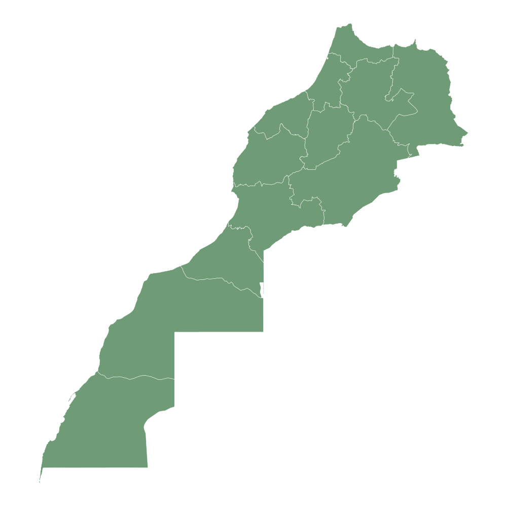

Tanger
بوابة المغرب على أوروبا.

Cap Spartel Situé à environ 14 kilomètres à l'ouest de Tanger, le Cap Spartel est un lieu mythique où les eaux de la mer Méditerranée rencontrent celles de l'océan Atlantique. Perché à 300 mètres au-dessus du niveau de la mer, son célèbre phare (construit en 1864) offre une vue panoramique imprenable sur le détroit de Gibraltar. C'est l'un des endroits les plus romantiques et les plus photographiés du Maroc, idéal pour admirer le coucher du soleil.

Situé à l'est de Tanger, le Cap Malabata abrite un phare majestueux et un château de style médiéval construit au début du XXe siècle. Ce site offre une vue spectaculaire sur la baie de Tanger et sur les côtes espagnoles de l'autre côté du détroit de Gibraltar. C'est un endroit paisible, parfait pour les amateurs de photographie et de paysages côtiers sauvages.

La Kasbah est le cœur historique et le point le plus élevé de Tanger. Ancienne citadelle fortifiée, elle offre un voyage dans le temps avec ses ruelles pavées, ses maisons blanchies à la chaux et ses portes monumentales. On y trouve le Palais du Sultan (Dar el-Makhzen), transformé en musée, et une vue imprenable sur le détroit de Gibraltar et les côtes espagnoles.

La Marina de Tanger est la destination moderne et luxueuse de la ville. C’est l’un des ports de plaisance les plus importants du Maroc, offrant une promenade agréable au bord de l'eau. Avec ses yachts élégants, ses restaurants chics et ses espaces de loisirs, elle symbolise le renouveau économique et touristique de la "Perle du Nord"

La Vieille Médina est un véritable labyrinthe de couleurs, de senteurs et d'artisanat local. C’est un quartier vibrant où la vie quotidienne des Tangérois s'exprime à travers ses marchés (souks), ses cafés historiques comme ceux du Petit Socco, et ses monuments anciens. C'est l'endroit idéal pour découvrir l'authenticité et l'âme cosmopolite de la ville.
Tetouan
الحمامة البيضاء.

Medina
La vieille ville de Tetouan est un véritable labyrinthe de ruelles étroites et sinueuses, où chaque coin de rue raconte l’histoire fascinante de la ville. Les murs blanchis à la chaux ajoutent un charme unique et photogénique, tandis que les souks colorés et animés regorgent de l’artisanat traditionnel marocain, des bijoux aux textiles et poteries. Les habitants accueillants créent une atmosphère chaleureuse et authentique, et les cafés historiques ainsi que les monuments anciens permettent de plonger dans le passé. Chaque passage et chaque place de la Medina révèlent une facette différente de la culture locale, offrant aux visiteurs une expérience immersive et mémorable. Les détails architecturaux, les portes sculptées et les petites fontaines font de chaque promenade un voyage unique. L’artisanat, les senteurs et les couleurs se mêlent pour créer un spectacle sensoriel inoubliable. Ainsi, la Medina de Tetouan est un lieu où histoire, culture et vie quotidienne se rencontrent harmonieusement
Martil
Martil est une plage populaire au sable doré et à la mer claire, idéale pour se détendre, se promener ou pratiquer des activités nautiques comme le jet-ski ou le paddle. L’ambiance y est conviviale et familiale toute l’année, et les cafés et restaurants le long du rivage offrent un cadre parfait pour admirer le coucher de soleil. La plage attire aussi des photographes et des amoureux de la nature grâce à ses panoramas magnifiques et à la tranquillité de certains coins cachés. Les promenades le long du littoral permettent de profiter de l’air frais et pur, tandis que les petites criques offrent des espaces intimes pour se relaxer. Martil est un lieu où nature, loisirs et détente se combinent pour créer une expérience unique pour tous les visiteurs. La beauté du paysage, les couleurs de la mer et le sable doré font de cette plage un joyau côtier incontournable
Cabonegro
Cabonegro est une région montagneuse offrant des panoramas impressionnants sur la nature environnante et les vallées verdoyantes de Tetouan. Les sentiers étroits et sinueux permettent aux randonneurs de s’aventurer dans un environnement préservé, où la faune et la flore locales sont riches et variées. Les sommets offrent des points de vue spectaculaires sur la ville et la mer, et chaque saison transforme le paysage avec des couleurs différentes. Les forêts luxuriantes, les cascades et les rivières font de Cabonegro un lieu idéal pour l’exploration et l’aventure en pleine nature. L’air frais et pur, loin de l’agitation urbaine, apporte un véritable ressourcement. Les paysages photogéniques permettent également aux amateurs de photographie de capturer la beauté du Rif. Enfin, Cabonegro est un endroit qui combine tranquillité, aventure et beauté naturelle à chaque pas.
Royal Palace
Le palais royal de Tetouan est un symbole historique et culturel incontournable, entouré de magnifiques jardins et de portes décorées dans le style traditionnel marocain. Les tours et les murs imposants reflètent l’architecture prestigieuse et l’histoire royale de la ville. Le palais est un lieu de prestige, où l’élégance et la beauté se mêlent pour offrir une expérience visuelle unique. Les visiteurs peuvent admirer les détails architecturaux, les fontaines et les espaces verts soigneusement entretenus. Chaque élément du palais raconte une partie de l’histoire de Tetouan et de sa tradition monarchique. La combinaison de l’histoire, de l’art et de la culture fait du palais royal un lieu fascinant à explorer. C’est un symbole de fierté pour les habitants et un incontournable pour tous ceux qui découvrent Tetouan
Mountains
Les montagnes du Rif entourant Tetouan offrent des paysages à couper le souffle et des panoramas variés, parfaits pour les randonnées et l’exploration de la nature. Les vallées verdoyantes, les forêts et les rivières créent un cadre naturel spectaculaire, idéal pour se ressourcer et profiter de l’air pur. Chaque sommet dévoile une vue différente sur la ville, la mer et les villages environnants, offrant aux visiteurs des expériences uniques à chaque pas. La faune et la flore locales enrichissent encore plus ces paysages majestueux, tandis que les sentiers permettent d’accéder à des endroits isolés et paisibles. Les montagnes du Rif sont un mélange parfait d’aventure, de tranquillité et de beauté naturelle. Les photographes et amoureux de la nature y trouvent un véritable paradis. Chaque excursion dans ces montagnes est une immersion dans l’authenticité et la splendeur du Maroc.Chefchaouen
المدينة الزرقاء.

Blue streets
La célèbre médina de Chefchaouen est connue pour ses ruelles entièrement peintes en bleu, créant un labyrinthe unique et photogénique. Les murs, portes et escaliers aux teintes bleu clair et indigo donnent à la ville un charme féérique et apaisant. Se promener dans ces rues est un voyage au cœur de l’architecture andalouse et marocaine traditionnelle. Les habitants décorent parfois les portes avec des motifs blancs pour créer un contraste harmonieux
Waterfall
La cascade d’Akchour est un site naturel impressionnant à quelques kilomètres de Chefchaouen. L’eau tombe en cascades sur des rochers, formant des bassins naturels clairs et rafraîchissants. La randonnée pour atteindre la cascade traverse des forêts verdoyantes et des paysages montagneux. Le bruit de l’eau et la verdure environnante créent une atmosphère paisible et relaxante. C’est un lieu idéal pour les amoureux de la nature et les photographes. Les sentiers sont adaptés à différents niveaux de randonnée, du facile au plus exigeant. La cascade est parfaite pour une pause nature loin de l’agitation de la médina.
Kasbah
La Kasbah de Chefchaouen est une ancienne forteresse située au centre de la médina. Ses murs en pierre et ses tours témoignent de l’histoire militaire de la ville. À l’intérieur, on trouve un petit musée présentant des objets traditionnels et des costumes locaux. La terrasse offre une vue panoramique sur la médina et les montagnes environnantes. Le jardin intérieur est calme et propice à la méditation ou à la photographie. La Kasbah symbolise le patrimoine et l’architecture unique de Chefchaouen. C’est un arrêt incontournable pour comprendre l’histoire et la culture de la ville
View
Depuis les hauteurs de Chefchaouen, on peut admirer des vues panoramiques sur la ville et les montagnes du Rif. Les toits bleus et les collines vertes créent un contraste saisissant. Le coucher du soleil sur la médina offre des couleurs magiques et changeantes. Les points de vue sont accessibles à pied par de petites ruelles ou sentiers. C’est un endroit privilégié pour les photographes et les amateurs de paysages. La vue permet de ressentir l’harmonie entre nature et architecture locale. Chaque point panoramique offre une expérience unique et mémorable
Plaza
La Place Outa el Hammam est le cœur vibrant de Chefchaouen. Elle est entourée de cafés, restaurants et petites boutiques d’artisanat. Les habitants et les visiteurs se retrouvent pour discuter, se détendre ou boire un thé à la menthe. Les bâtiments bleus qui entourent la place ajoutent une atmosphère colorée et chaleureuse. Des spectacles et événements locaux y sont parfois organisés, notamment en été. C’est un lieu idéal pour observer la vie quotidienne des habitants. La place est le point de départ parfait pour explorer la médina à piedFes
عاصمة العلم.

Medina
La médina de Fes el-Bali est l’un des plus anciens centres urbains du monde. Elle est classée au patrimoine mondial de l’UNESCO. Ses rues sont très étroites et forment un grand labyrinthe plein d’histoire. On y trouve des souks traditionnels, des maisons anciennes et des artisans. Les visiteurs peuvent voir des produits artisanaux comme le cuir, la poterie et les tapis. La médina représente la culture et la tradition marocaine depuis des siècles. C’est un endroit vivant où l’histoire et la vie quotidienne se mélangent.
Qarawiyyin
La University of al-Qarawiyyin est l’une des plus anciennes universités du monde. Elle a été fondée en l’an 859 par Fatima al-Fihri. Ce lieu est à la fois une université et une grande mosquée. Pendant des siècles, des étudiants du monde entier venaient étudier ici. On y enseignait la religion, les sciences, la philosophie et les langues. L’architecture du bâtiment est magnifique avec des mosaïques et des décorations traditionnelles. Aujourd’hui, ce lieu reste un symbole important du savoir et de la culture islamique.
Tanneries
Les Chouara Tannery sont célèbres dans toute la ville de Fès. C’est l’un des plus anciens endroits de fabrication de cuir au Maroc. Les artisans y travaillent encore avec des méthodes traditionnelles. Le cuir est nettoyé, coloré et séché dans des grands bassins ronds. Les couleurs viennent souvent de produits naturels comme le safran ou l’indigo. Depuis les terrasses, les visiteurs peuvent observer tout le travail des artisans. Les tanneries représentent une partie très importante de l’artisanat de Fès.
Bab Boujloud
La Bab Boujloud est l’une des portes les plus célèbres de Fès. Elle est connue comme la “porte bleue” de la médina. Cette porte a été construite au début du XXᵉ siècle. Elle est décorée avec de magnifiques mosaïques bleues et vertes. Bab Boujloud est l’entrée principale pour visiter la médina. Autour de la porte, on trouve beaucoup de cafés, restaurants et magasins. C’est un endroit très populaire pour les touristes et les habitants.
Walls
Les Walls of Fes entourent la vieille ville depuis des siècles. Ces murs ont été construits pour protéger la ville contre les attaques. Ils sont faits de terre et de matériaux traditionnels marocains. Les murs comprennent plusieurs grandes portes historiques. Ils donnent aussi une vue magnifique sur la médina et la ville. Aujourd’hui, ils représentent une partie importante du patrimoine de Fès. Ils montrent l’histoire et la puissance de la ville dans le passé.Meknes
المدينة الإسماعيلية.

Bab Mansour
La Bab Mansour est l’une des plus grandes et des plus belles portes du Maroc. Elle se trouve dans la ville de Meknes, près de la célèbre place El Hedim. La porte a été construite au XVIIIᵉ siècle sous le règne de Moulay Ismail. Elle est décorée avec de magnifiques mosaïques et du marbre. Son architecture montre la richesse de l’art marocain traditionnel. Bab Mansour était l’entrée principale de la ville impériale. Aujourd’hui, c’est un monument historique très visité par les touristes..jpg)
Heri
Les Heri es-Souani sont d’anciens greniers et réserves construits au XVIIᵉ siècle. Ils se trouvent aussi dans la ville de Meknes. Ce lieu servait à stocker le blé et la nourriture de l’armée. Les bâtiments sont très grands et construits avec des murs épais. Cela permettait de garder les aliments frais pendant longtemps. Le site montre la puissance et l’organisation du royaume à cette époque. Aujourd’hui, c’est un lieu historique important à visiter
Royal stables
Les Royal Stables of Meknes sont des écuries royales construites sous le règne de Moulay Ismail. Elles étaient utilisées pour abriter des milliers de chevaux. Ces chevaux servaient pour l’armée et les cérémonies royales. Les écuries sont très grandes et impressionnantes. Elles montrent l’importance des chevaux dans l’histoire du Maroc. L’architecture est solide et adaptée pour protéger les animaux. Aujourd’hui, ce site attire beaucoup de visiteurs.
Medina
La médina de Meknes est une ancienne partie de la ville pleine d’histoire. Elle est entourée de grands murs et de portes historiques. Dans la médina, on trouve des marchés traditionnels appelés souks. Les habitants vendent des produits artisanaux et locaux. Les rues sont étroites et pleines de vie. La médina représente la culture et les traditions marocaines. Elle fait partie du patrimoine mondial de l’UNESCO.
Volubilis
Volubilis est un ancien site archéologique romain situé près de Meknes. Cette ville existait il y a plus de 2000 ans. On peut encore voir des ruines de maisons, de temples et de routes. Le site est célèbre pour ses magnifiques mosaïques romaines. Volubilis montre l’histoire de la présence romaine au Maroc. Il est classé au patrimoine mondial de l’UNESCO. Aujourd’hui, c’est un endroit très important pour l’histoire et le tourisme.Rabat
العاصمة الإدارية.

Hassan Tower
La Hassan Tower est l’un des monuments les plus célèbres de Rabat. Elle a été construite au XIIᵉ siècle par le sultan Yaqub al-Mansur. La tour devait être le minaret de la plus grande mosquée du monde à cette époque. Cependant, la construction de la mosquée n’a jamais été terminée. Aujourd’hui, on peut voir les colonnes inachevées autour de la tour. Le site se trouve près du mausolée de Mohammed V. C’est un lieu historique et touristique très important au Maroc.
Kasbah Oudaya
La Kasbah of the Udayas est une ancienne forteresse située à Rabat. Elle a été construite au XIIᵉ siècle pendant la période almohade. La kasbah est célèbre pour ses maisons blanches et bleues. Ses ruelles étroites ressemblent à celles de Chefchaouen. Elle offre une magnifique vue sur l’océan Atlantique et le fleuve Bouregreg. À l’intérieur, on trouve aussi des jardins et un petit musée. C’est l’un des endroits les plus beaux et calmes de la ville.
Medina
La médina de Rabat est la vieille ville historique. Elle est entourée de murs anciens et de portes traditionnelles. Dans la médina, on trouve des marchés appelés souks. Les visiteurs peuvent acheter des produits artisanaux marocains. On y vend des tapis, des vêtements et des objets décoratifs. Les rues sont étroites et pleines de vie. La médina représente une partie importante de la culture marocaine.
Royal palace
Le Royal Palace of Rabat est la résidence officielle du roi du Maroc. Il se trouve dans la capitale Rabat. Le palais est aussi appelé Dar al-Makhzen. Il est entouré de grands murs et de jardins magnifiques. Le roi Mohammed VI y travaille et reçoit des invités officiels. Le public ne peut pas entrer à l’intérieur du palais. Mais les visiteurs peuvent admirer son architecture depuis l’extérieur
Marina
La Bouregreg Marina est un port moderne situé entre Rabat et Salé. Elle se trouve sur le fleuve Bouregreg près de l’océan Atlantique. La marina accueille de nombreux bateaux et yachts. Autour du port, on trouve des restaurants et des cafés. C’est un endroit très agréable pour se promener. La vue sur la kasbah et l’océan est magnifique. La marina est aujourd’hui un lieu touristique très populaire.Casablanca
العاصمة الاقتصادية.

Hassan II
La Hassan II Mosque est l’une des plus grandes mosquées du monde. Elle est située au bord de l’océan Atlantique à Casablanca. La mosquée a été construite sous le règne du roi Hassan II. Son minaret mesure environ 210 mètres de hauteur. Le bâtiment peut accueillir des dizaines de milliers de fidèles. L’architecture mélange l’art marocain traditionnel et la technologie moderne. Aujourd’hui, c’est l’un des monuments les plus célèbres du Maroc.
Ain Diab
Ain Diab est une plage très connue à Casablanca. Elle se trouve le long de l’océan Atlantique. Beaucoup de touristes et d’habitants viennent ici pour se détendre. La plage possède des restaurants, des cafés et des clubs. C’est aussi un endroit populaire pour les activités de loisirs. Les gens aiment se promener et profiter du coucher du soleil. Ain Diab est l’un des lieux touristiques les plus populaires de la ville.
Corniche
La Corniche of Casablanca est une longue promenade au bord de la mer. Elle offre une belle vue sur l’océan Atlantique. La corniche est entourée de restaurants, d’hôtels et de cafés. Beaucoup de gens viennent ici pour marcher ou faire du sport. C’est un lieu très animé surtout le soir et le week-end. Les visiteurs peuvent profiter de la mer et de l’air frais. La corniche est un endroit très agréable pour passer du temps
Marina
La Casablanca Marina est un quartier moderne situé près du port. Elle est connue pour ses bâtiments modernes et ses espaces de promenade. On y trouve des hôtels, des restaurants et des magasins. La marina offre une belle vue sur la mer et sur la ville. Beaucoup de touristes viennent se promener dans cette zone. C’est aussi un endroit populaire pour prendre des photos. La marina représente le développement moderne de Casablanca.
Maarif
Le Maarif est l’un des quartiers les plus connus de Casablanca. Il est célèbre pour ses magasins et ses centres commerciaux. Beaucoup de jeunes viennent ici pour faire du shopping. Le quartier possède aussi des restaurants et des cafés modernes. Maarif est un centre important pour les affaires et le commerce. La zone est très animée pendant la journée et le soir. C’est l’un des quartiers les plus dynamiques de la ville.Ifrane
سويسرا المغرب.

Park
Le Ifrane National Park est l’un des plus beaux parcs naturels du Maroc. Il est situé dans les montagnes du Moyen Atlas près de la ville d’Ifrane. Le parc est connu pour ses paysages naturels magnifiques. On y trouve des lacs, des montagnes et de grandes forêts de cèdres. Beaucoup de visiteurs viennent ici pour faire de la randonnée. Le parc est aussi un habitat pour plusieurs animaux sauvages. C’est un endroit parfait pour profiter de la nature et du calme.
Lion
Le Stone Lion of Ifrane est l’un des symboles les plus connus de la ville. Cette statue est sculptée dans une grande pierre. Elle représente un lion de l’Atlas, un animal autrefois présent dans la région. La statue se trouve dans un parc au centre d’Ifrane. Beaucoup de touristes prennent des photos devant ce monument. Le lion est devenu un symbole important de la ville. C’est l’un des lieux les plus visités d’Ifrane.
Lake
Le Dayet Aoua est un lac naturel situé près d’Ifrane. Il est entouré de montagnes et de paysages naturels magnifiques. Le lac attire beaucoup d’oiseaux migrateurs chaque année. Les visiteurs viennent pour profiter du calme et de la nature. C’est aussi un endroit populaire pour les promenades et les pique-niques. Le paysage change selon les saisons. Dayet Aoua est l’un des plus beaux lacs de la région.
Snow
La neige est l’une des choses qui rendent Ifrane célèbre. Pendant l’hiver, la ville se couvre souvent d’un manteau blanc. Cela donne à Ifrane une apparence semblable à certaines villes européennes. Beaucoup de visiteurs viennent voir la neige et profiter du paysage. Les montagnes autour de la ville deviennent très belles en hiver. La neige attire aussi les amateurs de sports d’hiver. C’est pour cela qu’Ifrane est parfois appelée “la petite Suisse du Maroc”.
Forest
La Cedar Forest of the Middle Atlas est une grande forêt située près d’Ifrane. Elle est célèbre pour ses grands cèdres de l’Atlas. La forêt abrite aussi les singes appelés macaques de Barbarie. Beaucoup de visiteurs viennent voir ces animaux dans leur habitat naturel. La forêt est idéale pour les promenades et la randonnée. L’air y est très pur et la nature très calme. C’est l’un des paysages naturels les plus impressionnants de la région.Marrakech
المدينة الحمراء.

Jamaa Lafna
La place Jemaa el-Fnaa est la place la plus célèbre de la ville de Marrakech et constitue le cœur de la médina. Chaque jour, elle attire de nombreux habitants et touristes venus découvrir l’ambiance traditionnelle marocaine. Pendant la journée, on y trouve des vendeurs de jus d’orange, des artistes et des artisans. Le soir, la place se transforme en un grand espace de restauration avec plusieurs stands de cuisine marocaine. On peut aussi voir des conteurs, des musiciens et des charmeurs de serpents. L’atmosphère y est très animée et authentique. C’est l’un des lieux culturels les plus importants de Marrakech.
Majorelle
Le Jardin Majorelle est l’un des jardins les plus beaux et les plus visités de Marrakech. Il a été créé par le peintre français Jacques Majorelle au début du XXᵉ siècle. Le jardin est connu pour sa couleur bleue intense appelée “bleu Majorelle”. On y trouve de nombreuses plantes exotiques, des cactus et des palmiers. Le lieu est calme et offre un espace de détente au milieu de la ville. Plus tard, le créateur de mode Yves Saint Laurent a participé à sa restauration. Aujourd’hui, il attire des visiteurs du monde entier.
Menara
Les Menara Gardens sont un grand jardin historique situé à l’ouest de Marrakech. Ils ont été construits au XIIᵉ siècle sous la dynastie almohade. Le jardin est célèbre pour son grand bassin d’eau utilisé autrefois pour irriguer les cultures. Au bord du bassin se trouve un pavillon traditionnel qui offre une belle vue sur les montagnes de l’Atlas. C’est un endroit calme où les habitants viennent se promener et se reposer. Le paysage est composé d’oliviers et d’espaces verts. Ce site est l’un des symboles historiques de la ville.
Koutoubia
La Koutoubia Mosque est la plus grande mosquée de Marrakech. Elle a été construite au XIIᵉ siècle pendant la dynastie almohade. Son minaret mesure environ 77 mètres de hauteur et constitue l’un des monuments les plus célèbres de la ville. L’architecture de la mosquée est un exemple remarquable de l’art islamique marocain. Autour de la mosquée se trouvent de beaux jardins où les visiteurs peuvent se promener. Elle se situe près de la place Jemaa el-Fna. Aujourd’hui, la Koutoubia est un symbole historique et religieux de Marrakech.
Souks
Les Souks of Marrakech sont des marchés traditionnels situés dans la médina. Ils forment un grand réseau de petites ruelles pleines de boutiques et d’ateliers d’artisans. On peut y acheter des vêtements traditionnels, des tapis, des lanternes, des bijoux et des épices. Les souks représentent un lieu important pour le commerce et la culture marocaine. Les artisans y travaillent souvent devant les visiteurs. L’ambiance est très animée et colorée. C’est un endroit idéal pour découvrir l’artisanat et les traditions du Maroc.Essaouira
مدينة الرياح.

Port
Le Port of Essaouira est l’un des lieux les plus connus de la ville de Essaouira. C’est un port de pêche traditionnel où l’on peut voir de nombreux bateaux bleus. Les pêcheurs y travaillent chaque jour pour ramener du poisson frais de l’océan Atlantique. Le port est aussi un endroit très vivant où les visiteurs peuvent observer la vie quotidienne des marins. Autour du port, il existe plusieurs petits restaurants qui préparent du poisson grillé. L’endroit offre une belle vue sur la mer et les remparts. C’est un symbole important de l’économie locale d’Essaouira.
Beach
La plage d’Essaouira Beach est l’une des plus belles plages du Maroc. Elle s’étend sur plusieurs kilomètres le long de l’océan Atlantique. Grâce au vent constant, elle est très populaire pour les sports nautiques comme le surf et le kitesurf. Beaucoup de visiteurs viennent aussi pour se promener sur le sable et profiter du paysage. La plage offre une vue magnifique sur la ville et les remparts. C’est un endroit idéal pour se détendre et respirer l’air marin. Elle attire chaque année de nombreux touristes.
Skala
La Skala de la Ville est une ancienne fortification située près de la mer. Elle a été construite au XVIIIᵉ siècle pour protéger la ville contre les attaques. On y trouve plusieurs canons historiques dirigés vers l’océan. Ce lieu offre une vue panoramique spectaculaire sur la mer Atlantique. La Skala est aussi célèbre pour son architecture en pierre et ses remparts impressionnants. Beaucoup de visiteurs viennent y prendre des photos. C’est l’un des sites historiques les plus importants d’Essaouira.
Medina
La Medina of Essaouira est le centre historique de la ville. Elle est connue pour ses ruelles étroites et ses maisons blanches aux portes bleues. La médina est inscrite au patrimoine mondial de l’UNESCO. On y trouve des marchés traditionnels, des boutiques d’artisanat et des galeries d’art. Les visiteurs peuvent y découvrir la culture et les traditions locales. L’ambiance y est calme et agréable. C’est un endroit idéal pour se promener et explorer la ville.
Sunset
Le coucher de soleil à Essaouira est un spectacle naturel très apprécié des visiteurs. Chaque soir, le soleil descend lentement sur l’océan Atlantique. Le ciel se colore de magnifiques teintes orange, rouges et violettes. Beaucoup de personnes se rassemblent sur la plage ou les remparts pour admirer ce moment. L’atmosphère devient calme et romantique. Les photographes aiment capturer ces paysages uniques. C’est l’un des moments les plus beaux à vivre dans la ville.Agadir
عاصمة سوس.

Beach
La Agadir Beach est l’une des plages les plus célèbres du Maroc. Elle s’étend sur plusieurs kilomètres le long de l’océan Atlantique. Le sable est fin et l’eau est idéale pour la baignade. Beaucoup de touristes viennent profiter du soleil et du climat agréable toute l’année. La plage propose aussi plusieurs activités comme le surf, le jet-ski et les promenades à cheval. Autour de la plage, il y a des hôtels, des cafés et des restaurants. C’est un endroit parfait pour se détendre et admirer la vue sur la mer.
Marina
La Marina d'Agadir est un port touristique moderne situé près de la plage. Elle accueille de nombreux bateaux et yachts. La marina est entourée de restaurants, de cafés et de boutiques. C’est un lieu très animé surtout le soir. Les visiteurs viennent se promener et profiter de la vue sur l’océan. L’endroit est propre, moderne et agréable pour les touristes. La marina représente un symbole du développement touristique d’Agadir.
Kasbah
La Agadir Oufella est une ancienne forteresse située sur une colline au-dessus de la ville. Elle a été construite au XVIᵉ siècle pour protéger la région. Après le tremblement de terre de 1960, il reste aujourd’hui des ruines historiques. Depuis la kasbah, on peut admirer une vue panoramique sur la ville et l’océan. C’est un lieu très populaire pour prendre des photos. Le site possède aussi une grande inscription visible la nuit. La kasbah représente une partie importante de l’histoire d’Agadir.
Souk
Le Souk El Had est le plus grand marché traditionnel de la ville. Il contient des centaines de boutiques et de stands. On peut y acheter des vêtements, des épices, des fruits, des légumes et de l’artisanat marocain. Le souk est très populaire auprès des habitants et des touristes. L’ambiance y est animée et pleine de couleurs. C’est un endroit idéal pour découvrir la culture locale. Il représente aussi un centre important du commerce à Agadir.
Cable car
Le Téléphérique d'Agadir est une attraction touristique récente. Il permet de monter facilement jusqu’à la kasbah d’Agadir Oufella. Pendant le trajet, les visiteurs peuvent admirer une vue magnifique sur la ville et l’océan Atlantique. Les cabines sont modernes et confortables. Le téléphérique attire beaucoup de touristes chaque année. C’est une expérience agréable pour découvrir Agadir d’en haut. Il est devenu l’une des nouvelles attractions populaires de la ville.Ouarzazate
هوليوود إفريقيا.

Ait Ben Haddou
Le Ait Benhaddou est l’un des sites historiques les plus célèbres près de Ouarzazate. C’est un ancien village fortifié construit en terre et en argile. Il se compose de maisons traditionnelles entourées de murailles. Ce lieu est inscrit au patrimoine mondial de l’UNESCO. De nombreux films et séries ont été tournés dans ce village. Les visiteurs viennent admirer son architecture traditionnelle et son paysage désertique. Depuis le sommet, on peut voir une vue magnifique sur la vallée.
Atlas studios
Les Atlas Studios sont les plus grands studios de cinéma en Afrique. Ils se trouvent près de la ville de Ouarzazate. Plusieurs films célèbres ont été tournés dans ces studios. Les visiteurs peuvent voir les décors utilisés dans les films historiques et d’aventure. Le site attire beaucoup de touristes intéressés par le cinéma. Les studios montrent aussi comment les films sont produits. C’est pour cette raison que Ouarzazate est appelée “Hollywood d’Afrique”.
Kasbah
La Kasbah of Taourirt est l’un des monuments les plus importants de la ville. Elle a été construite au XIXᵉ siècle et servait de résidence à une famille puissante. La kasbah possède plusieurs tours et décorations traditionnelles. Son architecture en terre est typique du sud du Maroc. Les visiteurs peuvent explorer ses couloirs et ses salles anciennes. Depuis la kasbah, on peut observer une belle vue sur la ville. Elle représente un symbole de l’histoire et de la culture de la région.
Desert
Le Sahara Desert se trouve non loin de Ouarzazate et offre des paysages spectaculaires. Les visiteurs viennent découvrir les dunes de sable et les vastes étendues désertiques. Plusieurs excursions permettent de faire des promenades à dos de chameau. La nuit dans le désert est aussi une expérience unique sous les étoiles. Les touristes peuvent dormir dans des camps traditionnels. Le désert représente une partie importante de la nature marocaine. Il attire chaque année des voyageurs du monde entier.
Valley
La Draa Valley est une vallée magnifique située près de Ouarzazate. Elle est connue pour ses longues palmeraies et ses villages traditionnels. La vallée suit le cours de l’oued Draa, l’un des plus longs fleuves du Maroc. Les paysages sont composés de palmiers, de montagnes et de kasbahs anciennes. Les habitants vivent principalement de l’agriculture et de l’artisanat. Les visiteurs aiment parcourir la vallée pour admirer la nature et la culture locale. C’est l’une des régions les plus pittoresques du sud marocain.